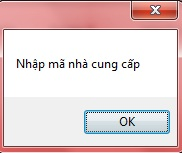

- Nhập đầy đủ thông tin vào các ô trống bên trên

- Ô Mã nhà cung cấp , nhấn F4 hoặc kích chọn hình kính lúp để chọn nhà cung cấp thanh toán.
- Ở ô trống bên dưới , bạn nhấn F4 để chọn Mã hóa đơn ,thông tin của hóa đơn đó sẽ được hiển thị lên các ô trống bên cạnh sau khi bạn nhập mã hóa đơn.
- Kích đúp nút thêm bên cạnh các ô thông tin hóa đơn.
- Thêm hóa đơn thành công vào Thanh toán với nhà cung cấp ,sẽ có thông tin hóa đơn đó được hiển thị phía dưới
- Thêm thành công hóa đơn thanh toán với nhà cung cấp, thông tin tổng thanh toán của các mặt hàng sẽ hiển thị các ô bên dưới.
- Kích đúp chọn nút Thêm ở menu dưới để hoàn tất giao dịch .
Điền thông tin của danh mục theo hướng dẫn,những ô bắt buộc phải nhập nếu bạn để trống hệ thống sẽ báo lỗi như hình sau:

- Chọn Trở về ở thanh công cụ dưới để trở về quản lý thanh toán với nhà cung cấp.